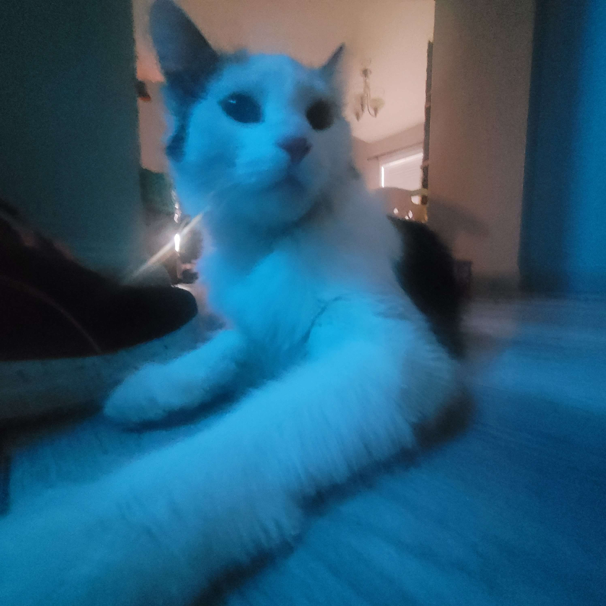

Nancy (also known as Sardine-Face) is a very sweet calico cat. She loves attention and is very, very vocal. She was found as a small kitten on our property, who we eventually got into a trap. When we got her inside, in under an hour she was incredibly friendly and nothing like the skittish feral kitten who we had trapped. I'm still not sure exactly why she adapted so fast to the inside life, but she did, and is living her best life.
